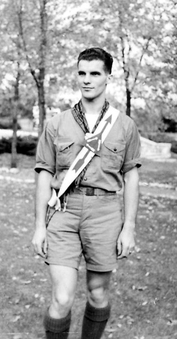

Dwaine Wiley and his twin brother, Dwight Allen, were born on November 12, 1914 in Oquawka, Illinois to John W. and Ida May (Knox) Campbell. Mrs. Campbell died in 1918, and three of the 12 surviving children in the family were placed in an orphanage in Evanston, Illinois. Later that year, Earl LeRoy Filkins and Jennie Charlotte (nee Hawes) Filkins adopted the three children – Louise, Dwight, and Dwaine.
Dwaine began his scouting career in BSA Troop 398 where his father was the Scoutmaster. He became an Eagle Scout, and was inducted into the Order of the Arrow on July 16, 1931. He received his Vigil Honor on August 04, 1935 being given the name "The Good Worker".
He served in the Navy during WWII, enlisting on January 21, 1943 and was discharged on December 21, 1945. He served on the battleship New Jersey, which was part of the Pacific fleet. After the war ended, he began his studies to prepare for the priesthood in the Episcopal Church. He graduated from the University of the South at Sewanee, TN with a degree in Philosophy and Greek, and in 1951 graduated from Seabury Western Theological Seminary in Evanston, Illinois. He was ordained a deacon on May 26, 1951 at St. James Church in Chicago, and ordained to the priesthood in December of 1951.
Dwaine married Mary Ellen Bryant at Grace Church in Oak Park, IL on April 25, 1952. He was curate at Grace Church at that time. They later moved to Petoskey, Michigan, where Dwaine was the rector of Emmanuel Church. He also served as rector of churches in Marinette, Wisconsin, and then in Rice Lake, Wisconsin.
Throughout the years he continued working with Scouting, and was awarded the Silver Beaver in 1960 while living in Petoskey. He went on to serve as the Advisor of the Otyokwa Lodge #337 in the Chippewa Valley Council, Eau Claire, WI from 1965-1967. He had a lifelong interest in Indian clothing and artifacts which he developed during his work in the Order of the Arrow as a youth member.